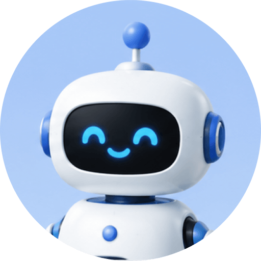
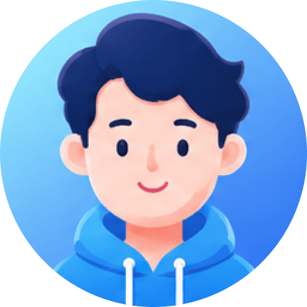
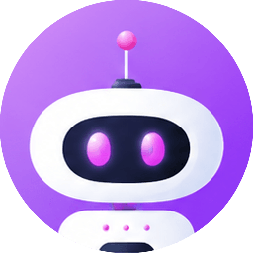
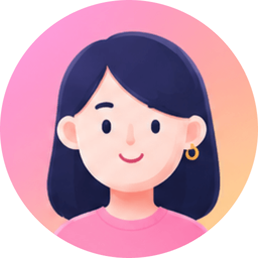
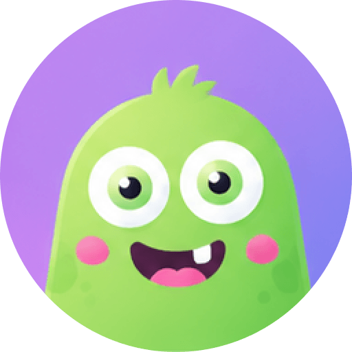
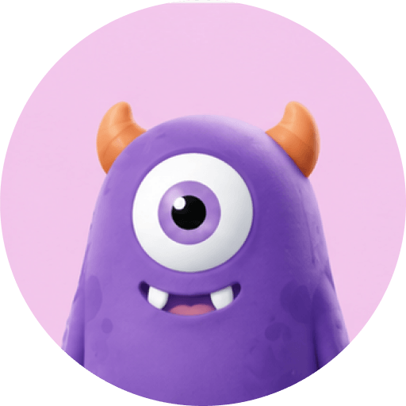

CSGCLAW GUIDE · 2026
把你的 AI 团队，
装进一台电脑
CSGClaw 是跑在本机的多智能体协作平台。这份导览用 10 个步骤，带你把第一个任务、第一次协作和第一个定时任务真正跑起来。
适用 CSGClaw 0.9+
⌕搜索智能体和团队
全部 9我的智能体 8团队 1
主理人›

文刀刀›
产品经理 Alice› 测试工程师 Edward›
测试工程师 Edward›
高级开发工程师 Alex›
架构师 Bob›
重庆旅游›软件开发 Team5 名成员 · 可协作›
选一个智能体或团队
智能体可以单独工作，也可以组成团队协作。选择一个智能体开始工作。
› 点击任意智能体，右侧进入工作区
› 右上角「新建智能体」/ 新建团队
› 列表上方的搜索和筛选，能快速找到目标
新手篇 · 第 2 步
智能体不是聊天窗口，
是可以养成的同事
每个智能体都有自己的指令、模型、工作目录、技能、连接器和记忆。你把一次成功的做法留在它身上，下一次就不用从头解释。
- 主理人 Manager 是通用智能体，拿不准选谁时就选它。
- 领域智能体按职责拆：产品、工程、测试、调研、写作各管一段。
- 团队把常用的几个智能体固定成一组，下次直接点名。
你可以这样说“你是一名资深行业研究分析师，先给结论，再给证据和来源。”
任务
1产品与厂商4 条主线 · 已交付
2行业案例与价值6 个场景 · 已交付
3技术瓶颈与风险正在检索来源
4汇总与冲突标注依赖前三项

主理人 Manager · 18:02
已拆成 4 个子任务，三路并行检索；最后统一汇总，冲突的地方单独标注。
研究分析师 · 18:14
产品线梳理完成，整理出 12 条关键发布与时间点。
▤ 产品与厂商.md产品经理 · 18:20
发现两家厂商对“落地”的口径不一致，已记录，等待汇总时统一。
先按这个结构继续，汇总时给我一页结论。
输入消息，@ 引用成员或文件发送 ↑
进阶篇 · 第 6 步
一个人干不完的活，
交给一个团队
在新建任务时把一个团队选为执行者，这次任务就变成协作任务：主理人 Manager 拆解、成员并行、结果汇总。你不需要分别开五个聊天窗口。
- 任务看板显示依赖与进度，谁卡住了一眼能看到。
- 成员各自有独立上下文，不会互相污染。
- 你只在关键节点做决定，其余交给主理人 Manager 推进。
你可以这样说“分三路并行调研，最后由主理人 Manager 汇总，标注冲突和不确定项。”
智能体模板 · 12
官方我的
官方

文档处理专家
Word · PDF · 排版
官方
行业研究分析师
检索 · 证据 · 简报
官方
前端工程师
页面 · 组件 · 调试
我的
产品经理 Alice
需求 · 原型 · 验收
我的
测试工程师
用例 · 回归 · 报告
＋ 新建模板
↳把顺手的智能体另存为模板，指令、技能和记忆摘要一起带走。
进阶篇 · 第 9 步
把一次成功，
变成下一次的起点
智能体可以另存为模板，团队可以保留成员配置，技能可以带到下一个项目，定时任务可以复制节奏。用得越久，你的团队越像你的团队。
- 官方模板可直接启用，也可以从我的模板开始。
- 模板包含指令、技能与只读记忆摘要。
- 团队配置可复用，不必每次重新点名。
你可以这样说“把这个智能体保存为模板，下次新项目直接启用。”